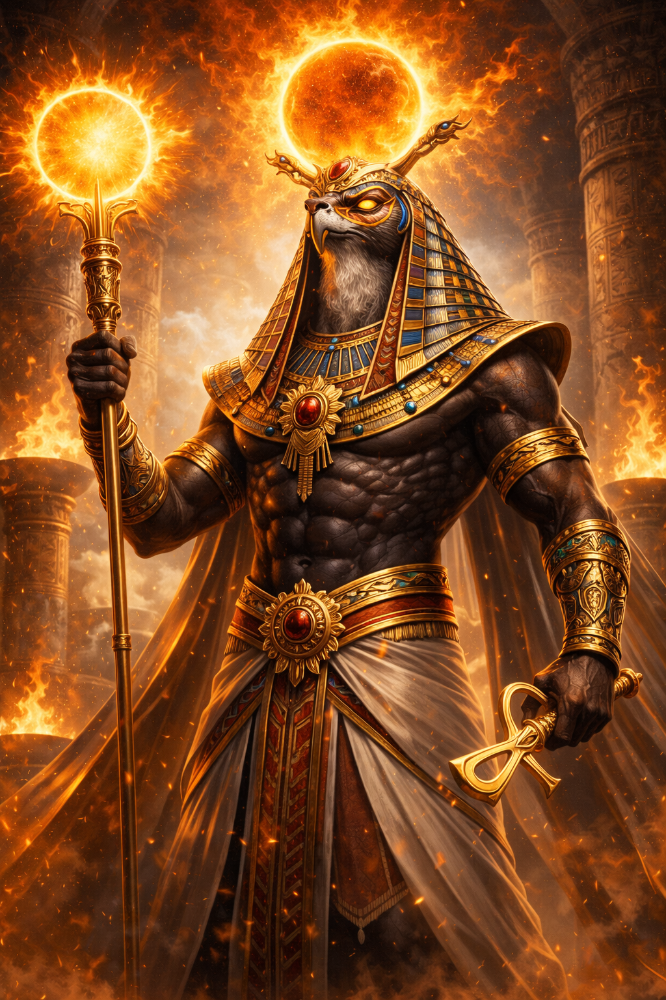
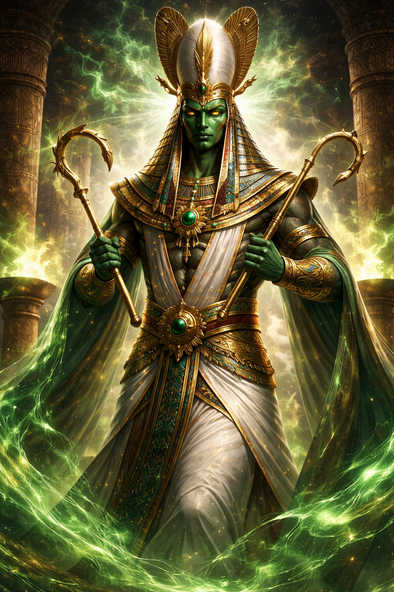
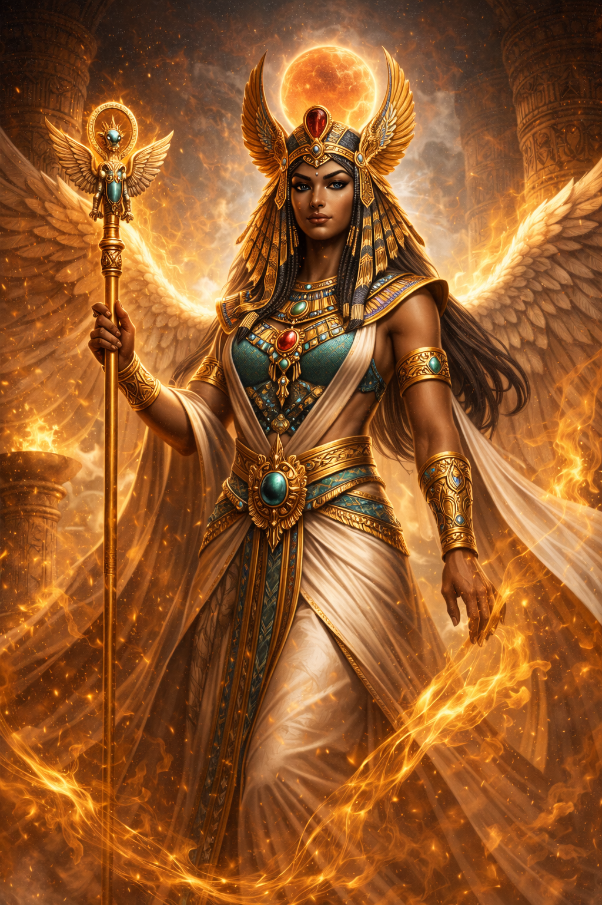
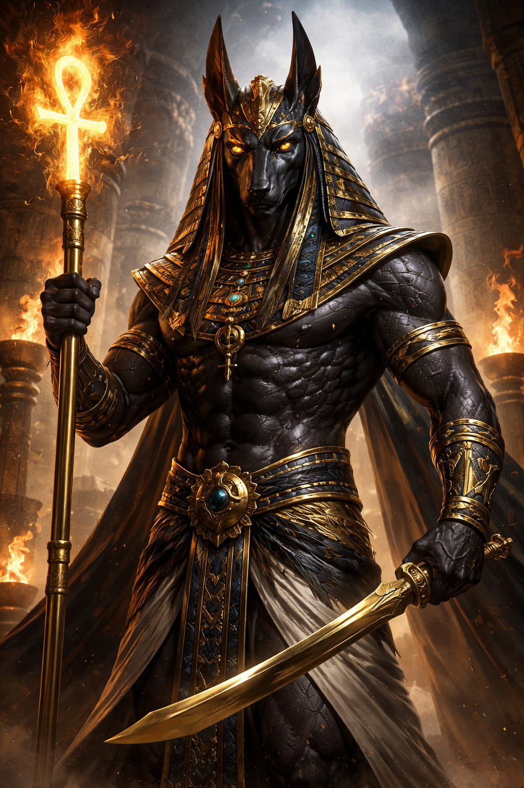
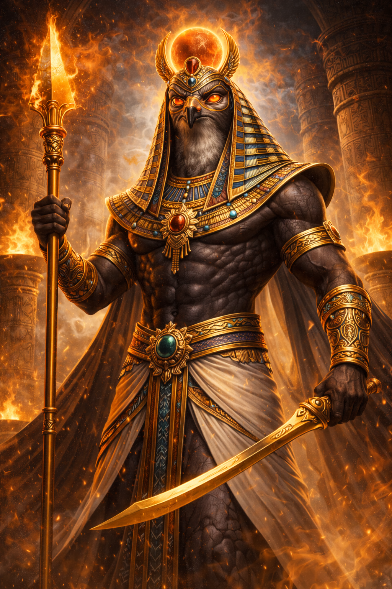

-

Ra: Dios del Sol, figura central y creador del mundo en la mitología egipcia. Era
representado con cabeza de halcón y disco solar.
-

Osiris: Dios de la resurrección y del más allá. Gobernaba el inframundo y era
símbolo de la vida después de la muerte.
-

Isis: Diosa de la magia y la maternidad, protectora del trono, esposa de Osiris y
madre de Horus.
-

Anubis: Protector de las tumbas y dios de la momificación, con cabeza de chacal,
guiaba las almas al más allá.
-

Horus: Dios del cielo y de los faraones, hijo de Isis y Osiris, representado como un
halcón o un hombre con cabeza de halcón.
Explora los dioses: haz clic en su imagen para conocer su historia y significado.